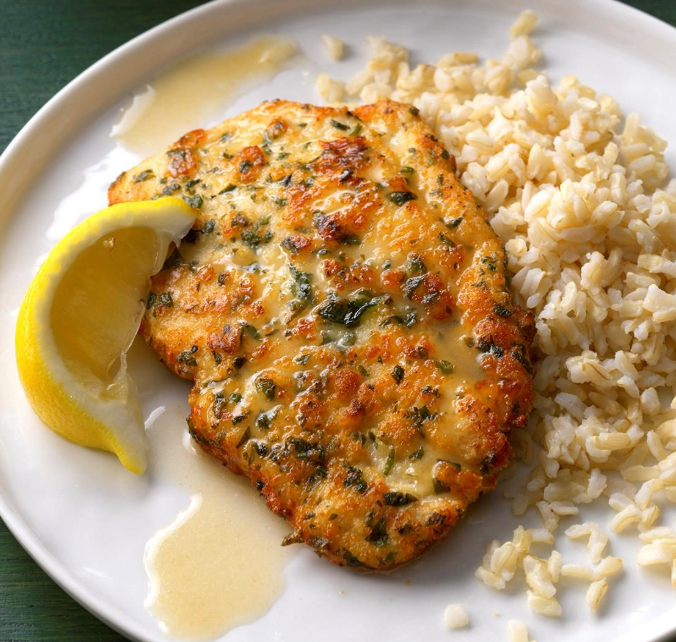

About our App
- designed to help elderly individuals plan and enjoy nutritious, balanced, and easy-to-prepare meals that support their unique dietary requirements.
- provides customized meal plans based on age, health conditions, and dietary preferences (such as low-sodium, diabetic-friendly, or heart-healthy options).
- Elderly can browse daily or weekly meal suggestions, follow simplified recipes with large, readable fonts, set reminders for meal prep or hydration, and track their nutrient intake.
Meditereian Food:
Chicken Piccata with Lemon Sauce
- 8 boneless skinless chicken breast halves (4 ounces each)
- 1/2 cup egg substitute
- 2 tablespoons plus 1/4 cup dry white wine or chicken broth, divided
- 5 tablespoons lemon juice, divided
- 3 garlic cloves, minced
- 1/8 teaspoon hot pepper sauce
- 1/2 cup all-purpose flour
- 1/2 cup grated Parmesan cheese
- 1/4 cup minced fresh parsley
- 1/2 teaspoon salt
- 3 teaspoons olive oil, divided
- 2 tablespoons butter